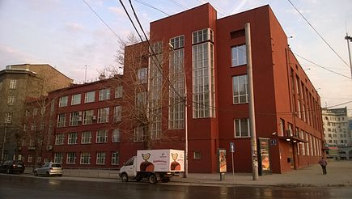

Конструктивизм (Искусство)
Конструктиви́зм направление в изобразительном искусстве, архитектуре, фотографии и декоративно-прикладном искусстве, зародившееся в 1915 году и существовавшее в течение первой половины 1930 годов в СССР, затем в ряде других стран, прежде всего, в Германии (Баухаус) и Голландии (Де Стейл). В некоторых случаях конструктивизм рассматривают как источник и составляющую часть интернационального стиля и как одно из течений, определивших развитие Нового ви́дения.
У этого термина существуют и другие значения, см. Конструктивизм.
Особенности стиля
Характеризуется строгостью, геометризмом, лаконичностью форм и монолитностью внешнего облика. В архитектуре принципы конструктивизма были сформулированы в теоретических выступлениях А. А. Веснина и М. Я. Гинзбурга, практически все они впервые воплотились в созданном братьями Александром, Виктором и Леонидом Весниными проекте Дворца труда в Москве (1923) с его чётким, рациональным планом и выявленной во внешнем облике конструктивной основой здания (железобетонный каркас). В 1926 году была создана официальная творческая организация конструктивистов — Объединение современных архитекторов (ОСА). Данная организация являлась разработчиком так называемого функционального метода проектирования, основанного на научном анализе особенностей функционирования зданий, сооружений, градостроительных комплексов. Характерные памятники конструктивизма — фабрики-кухни, Дворцы труда, рабочие клубы, дома-коммуны.
Применительно к зарубежному искусству термин «конструктивизм» в значительной мере условен: в архитектуре он обозначает течение внутри функционализма, стремившееся подчеркнуть экспрессию современных конструкций, в живописи и скульптуре — одно из направлений авангардизма, использовавшее некоторые формальные поиски раннего конструктивизма (скульпторы Н. Габо, А. Певзнер).
В указанный период в СССР существовало также литературное движение конструктивистов.
Появление конструктивизма
Конструктивизм принято считать советским явлением, возникшим после Октябрьской революции в качестве одного из направлений нового, авангардного, пролетарского искусства, хотя, как и любое явление в искусстве, он не может быть ограничен рамками одной страны. Так, провозвестником этого направления в архитектуре можно рассматривать, например, такие сооружения как Эйфелева башня, которая использовала принцип открытой каркасной структуры и демонстрировала конструктивные элементы во внешних архитектурных формах. Этот принцип обнаружения конструктивных элементов стал одним из важнейших приемов архитектуры XX века и был положен в основу как интернационального стиля, так и конструктивизма.
Как писал Владимир Маяковский в своём очерке о французской живописи:
«Впервые не из Франции, а из России прилетело новое слово искусства — конструктивизм…
В условиях непрекращающегося поиска новых форм, подразумевавшего забвение всего «старого», новаторы провозглашали отказ от «искусства ради искусства». Отныне искусство должно было служить производству, а производство — народу. Большинство тех, кто впоследствии примкнул к течению конструктивистов, были идеологами утилитаризма или так называемого «производственного искусства». Они призывали художников «сознательно творить полезные вещи» и мечтали о новом гармоничном человеке, пользующемся удобными вещами и живущем в благоустроенном городе.
Так, один из теоретиков «производственного искусства» Борис Арватов писал, что «…будут не изображать красивое тело, а воспитывать настоящего живого гармоничного человека; не рисовать лес, а выращивать парки и сады; не украшать стены картинами, а окрашивать эти стены…»
«Производственное искусство» стало не более чем концепцией, однако сам по себе термин конструктивизм был произнесён именно теоретиками этого направления (в их выступлениях и брошюрах постоянно встречались также слова «конструкция», «конструктивный», «конструирование пространства»).
Помимо вышеуказанного направления на становление конструктивизма оказали огромное влияние футуризм, супрематизм, кубизм, пуризм и другие новаторские течения 1910-х годов в изобразительном искусстве, однако социально обусловленной основой стало именно «производственное искусство» с его непосредственным обращением к современным российским реалиям 1920-х годов (эпохи первых пятилеток).
Рождение термина
Термин «конструктивизм» использовался советскими художниками и архитекторами ещё в 1920 году: конструктивистами себя называли Александр Родченко и Владимир Татлин — автор проекта Башни III Интернационала. Впервые конструктивизм официально обозначен в 1922 году в книге Алексея Михайловича Гана, которая так и называлась — «Конструктивизм».
А. М. Ганом провозглашалось, что «…группа конструктивистов ставит своей задачей коммунистическое выражение материальных ценностей… Тектоника, конструкция и фактура — мобилизующие материальные элементы индустриальной культуры». То есть явным образом подчёркивалось, что культура новой России является индустриальной.
Конструктивизм в архитектуре
В 1922—1923 годах в Москве, начавшей восстанавливаться после Гражданской войны, были проведены первые архитектурные конкурсы (на проекты Дворца труда в Москве, здания московского филиала газеты «Ленинградская правда», здания акционерного общество «Аркос»), в которых принимали участие архитекторы, начавшие творческий путь ещё до революции — Моисей Гинзбург, братья Веснины, Константин Мельников, Илья Голосов, Пантелеймон Голосов и др. Многие проекты были наполнены новыми идеями, позднее положенными в основу новых творческих объединений — конструктивистов и рационалистов. Рационалистами было создано объединение «АСНОВА» (Ассоциация новых архитекторов), идеологами которого были архитекторы Николай Ладовский и Владимир Кринский. Конструктивисты же объединились в ОСА (Объединение современных архитекторов) во главе с братьями Весниными и Моисеем Гинзбургом. Ключевым отличием двух течений стал вопрос о восприятии архитектуры человеком: если конструктивисты придавали наибольшее значение функциональному назначению здания, которое и определяло конструкцию, то рационалисты считали функцию здания второстепенной и стремились учитывать прежде всего психологические особенности восприятия.
Конструктивисты видели своей задачей увеличение роли архитектуры в жизни, и способствовать этому должны были отрицание исторической преемственности, отказ от декоративных элементов классических стилей, использование функциональной схемы как основы пространственной композиции. Конструктивисты искали выразительность не в декоре, а в динамике простых конструкций, вертикалей и горизонталей строения, свободе плана здания.
Ранний конструктивизм
Большое влияние на проектирование конструктивистских общественных зданий оказала деятельность талантливых архитекторов — братьев Леонида, Виктора и Александра Весниных. Они пришли к осознанию лаконичной «пролетарской» эстетики, уже имея солидный опыт в проектировании зданий, в живописи и в оформлении книг.
Впервые архитекторы-конструктивисты громко заявили о себе на конкурсе проектов здания Дворца Труда в Москве. Проект Весниных выделялся не только рациональностью плана и соответствием внешнего облика эстетическим идеалам современности, но и подразумевал использование новейших строительных материалов и конструкций. Следующим этапом был конкурсный проект здания газеты «Ленинградская правда» (московского отделения). Задание было на редкость сложным — для строительства предназначался крохотный участок земли — 6×6 метров на Страстной площади. Веснины создали миниатюрное, стройное шестиэтажное здание, которое включало не только офис и редакционные помещения, но и газетный киоск, вестибюль, читальный зал (одна из задач конструктивистов заключалась в том, чтобы на малой площади сгруппировать максимальное количество жизненно необходимых помещений).
Ближайшим соратником и помощником братьев Весниных был Моисей Гинзбург. В своей книге «Стиль и эпоха» он размышляет о том, что каждый стиль искусства адекватно соответствует «своей» исторической эпохе. Развитие новых архитектурных течений, в частности, связано с тем, что происходит «…непрерывная механизация жизни», а машина есть «…новый элемент нашего быта, психологии и эстетики». Гинзбург и братья Веснины организовывают Объединение современных архитекторов (ОСА), в которое вошли ведущие конструктивисты.
C 1926 года конструктивисты начинают выпускать свой журнал — «Современная архитектура» («СА»). Выходил журнал на протяжении пяти лет. Оформлением обложек занимались Алексей Ган, Варвара Степанова и Соломон Телингатер.
Расцвет конструктивизма
Архитекторы зрелого конструктивизма использовали функциональный метод, основанный на научном анализе особенностей функционирования зданий, сооружений, градостроительных комплексов. Таким образом, идейно-художественные и утилитарно-практические задачи рассматривались в совокупности. Каждой функции отвечает наиболее рациональная объёмно-планировочная структура (форма соответствует функции).
а этой волне происходит борьба конструктивистов за «чистоту рядов» и против стилизаторского отношения к конструктивизму. Иначе говоря, лидеры ОСА боролись против превращения конструктивизма из метода в стиль, во внешнее подражательство, без постижения сущности. Так, нападкам подвергся архитектор Григорий Бархин, создавший Дом «Известий».
В эти же годы происходит увлечение конструктивистов идеями Ле Корбюзье: автор и сам приезжал в Россию, где плодотворно общался и сотрудничал с лидерами ОСА.
В среде ОСА выдвигается ряд перспективных архитекторов, таких, как братья Илья и Пантелеймон Голосовы, Иван Леонидов, Михаил Барщ, Владимир Владимиров. Конструктивисты активно участвуют в проектировании промышленных зданий, фабрик-кухонь, домов культуры, клубов, жилых домов.
Наиболее распространённым типом общественных зданий, воплотившим в себе основные принципы конструктивизма, стали здания клубов и домов культуры. Примером может служить дома культуры Пролетарского района Москвы, более известного как Дворец культуры ЗИЛа; строительство осуществлялось в 1931—1937 годах по проекту братьев Весниных. При создании проекта авторы опирались на известные пять принципов Ле Корбюзье: использование опор-столбов вместо массивов стен, свободная планировка, свободное оформление фасада, удлинённые окна, плоская крыша. Объёмы клуба подчёркнуто геометричны и представляют собой вытянутые параллелепипеды, в которые врезаны ризалиты лестничных клеток, цилиндры балконов.
Характерным примером воплощения функционального метода стали дома-коммуны, архитектура которых соответствовала принципу, высказанному Ле Корбюзье: «дом — машина для жилья». Известным примером зданий такого типа является общежитие-коммуна Текстильного института на улице Орджоникидзе в Москве. Автором проекта, реализованного в 1930—1931 годах, был специализировавшийся преимущественно на промышленной архитектуре Иван Николаев. Идея дома-коммуны предполагала полное обобществление быта. Концепция проекта была предложена самими студентами; функциональная схема здания была ориентирована на создание жёсткого распорядка дня студентов. Утром студент просыпался в жилой комнате — спальной кабине размером 2,3 на 2,7 м, вмещавшей только кровати и табуретки — и направлялся в санитарный корпус, где проходил как по конвейеру последовательно душевые, помещения для зарядки, раздевалки. Из санитарного корпуса жилец по лестнице или пандусу спускался в низкий общественный корпус, где проходил в столовую, после чего отправлялся в институт или же в другие помещения корпуса — залы для бригадной работы, кабинки для индивидуальных занятий, библиотеку, актовый зал. В общественном корпусе находились также ясли для детей до трёх лет, а на крыше была устроена открытая терраса. В результате проведённой в 1960-е годы реконструкции общежития первоначальный замысел строгого распорядка дня был нарушен. Другой известный пример — дом наркомата финансов в Москве. Он интересен как пример дома «переходного типа» от традиционного квартирного жилья к дому-коммуне. Подобных домов было построено шесть — четыре в Москве, по одному Екатеринбурге и Саратове; до настоящего времени сохранились не все.
Особой фигурой в истории конструктивизма считается любимый ученик А. Веснина — Иван Леонидов, выходец из крестьянской семьи, начавший свой творческий путь с ученика иконописца. Его во многом утопические, устремлённые в будущее, проекты не нашли применения в те трудные годы. Сам Ле Корбюзье называл Леонидова «поэтом и надеждой русского конструктивизма». Работы Леонидова и теперь восхищают своими линиями — они невероятно, непостижимо современны.
Ленинградский конструктивизм
Ленинградские конструктивисты:
- Абросимов, Павел Васильевич
- Вакс, Иосиф Александрович
- Гегелло, Александр Иванович
- Гуминер, Яков Моисеевич
- Демков, Николай Фёдорович
- Зазерский, Алексей Иванович
- Каценеленбоген, Тамара Давыдовна
- Кричевский, Давид Львович
- Левинсон, Евгений Адольфович
- Лялин, Олег Леонидович
- Мендельсон, Эрих
- Мунц, Владимир Оскарович
- Никольский, Александр Сергеевич
- Никольский, Александр Сергеевич
- Оль, Андрей Андреевич
- Претро, Ипполит Александрович
- Симонов, Григорий Александрович
- Троцкий, Ной Абрамович
- Фомин, Игорь Иванович
- Хряков, Александр Фёдорович
- Чернихов, Яков Георгиевич
- Явейн, Игорь Георгиевич
Харьковский конструктивизм
Будучи столицей Советской Украины в 1919—1934 годах, Харьков оказался одним из крупнейших центров конструктивистской застройки в Советском Союзе. Общепризнанным символом конструктивизма в Харькове является ансамбль площади Свободы (до 1991 — площадь Дзержинского) с доминирующим зданием Госпрома (Держпрома). Многочисленные здания в конструктивистском стиле занимают район вокруг площади; среди них — дом «Слово», построенный в 1928 году кооперативом литераторов и имеющий в плане символическую форму буквы «С» (слав. «слово»). Яркими конструктивистскими постройками в Харькове являются дом культуры железнодорожников, почтамт, общежитие Харьковского политехнического института «Гигант».
В 1931 году в юго-восточной части города был возведён Харьковский тракторный завод. Соцгород ХТЗ (архитектор П. Алешин) является выдающимся образцом жилой застройки в конструктивистском стиле.
Минский конструктивизм
Примером конструктивизма в Минске является дом правительства Республики Беларусь — крупнейшее общественное здание Иосифа Лангбарда, один из лучших памятников конструктивизма, положивший начало формированию нового центра города.
Клуб пищевиков ― здание общественного назначения, построенное в Минске в авангардно-конструктивистском стиле архитектором А. К. Буровым в 1929 году.
Минские конструктивисты:
- Андрей Буров
- Иосиф Лангбард
Горьковский конструктивизм
В Нижнем Новгороде было возведено несколько домов-коммун («Культурная революция», «Дом чекиста») и комплекс соцгорода в районе автозавода.
Свердловский конструктивизм
Екатеринбург (Свердловск), до 1934 бывший центром огромной Уральской области, стал одним из крупнейших центров конструктивистской архитектуры в СССР. В начале 1930-х годов XX века центр города был перестроен в соответствии с планом «Большой Свердловск»; крупные конструктивистские ансамбли разместились вдоль восточной части проспекта Ленина, на площади Труда и площади Парижской Коммуны. В качестве примеров можно назвать жилой комбинат НКВД («Городок чекистов»), Дом связи, дом-коммуну Госпромурала и ряд других зданий. Кроме того, многочисленные конструктивистские здания разбросаны по городскому центру — например, Дом контор, Дом старых большевиков, Дом обороны. С запада проспект Ленина замыкает Медгородок, объединяющий пять медицинских зданий в конструктивистском стиле, а с востока — комплекс Уральского политехнического института (Втузгородок), включающий здания института и комплекс конструктивистских общежитий.
В северной части Екатеринбурга в 1928—1933 годах был построен мощный Уральский завод тяжелого машиностроения (Уралмаш). Соцгород Уралмаш, выстроенный в тридцатые годы, является ярким примером конструктивистского рабочего поселка. Важнейшими конструктивистскими сооружениями Уралмаша считаются ансамбль площади Первой пятилетки и водонапорная башня УЗТМ («Белая башня»).
Свердловские конструктивисты:
- Соколов, Вениамин Дмитриевич
- Тумбасов, Арсений Михайлович
- Антонов, Иван Павлович
- Горшков, Александр Борисович
- Коротков, Евгений Николаевич
- Домбровский, Сигизмунд Владиславович
- Валенков, Георгий Павлович
- Парамонов, Валерий Павлович
- Голубев, Георгий Александрович
- Жеманов, Николай Иванович
Конструктивизм в дизайне и фотографии
Конструктивизм — направление, которое, прежде всего, связывают с архитектурой, однако он существовал в дизайне, полиграфии, художественном творчестве. Конструктивизм в фотографии отмечен геометризацией композиции, съёмкой в головокружительных ракурсах при сильном сокращении объёмов. Такими экспериментами занимался, в частности, Александр Родченко.
В графических видах творчества (плакат и пр.) конструктивизм характеризовался применением фотомонтажа вместо рисованной иллюстрации, предельной геометризацией, подчинением композиции прямоугольным ритмам. Стабильной была и цветовая гамма: чёрный, красный, белый, серый с добавлением синего и жёлтого (С. Сенькин). В области моды также существовали определённые конструктивистские тенденции — на волне общемирового увлечения прямыми линиями в дизайне одежды, советские модельеры тех лет создавали подчёркнуто геометризированные формы.
Среди модельеров выделяется Варвара Степанова, которая с 1924 года вместе с Любовью Поповой разрабатывала тканевые рисунки для 1-й ситценабивной фабрики в Москве, была профессором текстильного факультета ВХУТЕМАСа, проектировала модели спортивной и повседневной одежды.
Самой известной фотомоделью тех лет была знаменитая Лиля Юрьевна Брик.
Конструктивизм в литературе
В 1923 рядом манифестов был провозглашён конструктивизм как течение в литературе (прежде всего в поэзии), создан «Литературный центр конструктивистов». В нём участвовали поэты Илья Сельвинский, Вера Инбер, Владимир Луговской, Борис Агапов, литературоведы Корнелий Зелинский, Александр Квятковский и другие. Конструктивисты-писатели провозглашали близость поэзии «производственной» тематике (характерные названия сборников: «Госплан литературы», «Бизнес»), очеркизм, широкое применение «прозаизмов», использование нового размера — тактовика, эксперименты с декламацией. К 1930 году конструктивисты стали объектом травли со стороны РАПП и объявили о самороспуске.
Конструктивизм в музыке
Конструктивизм оказал заметное влияние на музыкальное искусство. Хотя не было композиторов, посвятивших этому направлению свое творчество целиком, однако в отдельных произведениях многих композиторов это направление принесло свои плоды. В первую очередь это было связано с поэтизацией образов заводов и фабрик, с имитацией слуховых впечатлений от звуков машин и механизмов, которые воспринимались музыкантами как особая «музыка машин». Яркие плоды это направление дало в творчестве французских композиторов, составлявших группу «Шестёрка». Сделавшись, по существу, теоретиком и первооткрывателем нового направления, Эрик Сати, который ещё в годы Первой мировой войны изобрёл новый вид звукового искусства, «меблировочную музыку», писал о том, что она «глубоко индустриальна».:437-438 Действительно, конструктивный принцип механической повторности, положенный им в основу своего изобретения, характерен для других произведений этого направления. О подчёркнутой конвейерности или индустриальности говорят и названия некоторых опусов Сати: «Автоматические описания» (1913), «Звуковой плиточный пол» (1917—1918), «Железный коврик для приёма гостей» (1924) и другие. Пример старшего друга и наставника своеобразным образом преломился у некоторых композиторов из французской «Шестёрки». К примеру, у Дариюса Мийо одним из основных произведений конструктивистского стиля стал вокальный цикл для сопрано и семи инструментов «Сельскохозяйственные машины» (1919), а спустя пять лет — балет «Голубой экспресс» (1924), а у Артюра Онеггера — симфоническая картина «Пасифик-231» (1923), изображавшая движение паровоза во главе железнодорожного состава. Эта яркая концертная пьеса принесла ему большую популярность. Напротив того, Жорж Орик категорически не принял авангардное начинание Сати, называя его меблировочную музыку — «назойливой химерой».
Важнейшим представителем этого направления в отечественной музыке стал А. Мосолов. Его симфонический эпизод «Завод» из неосуществленного балета «Сталь» стал символом конструктивизма в русской музыке. Конструктивизм также проявил себя в таких произведениях, как фокстрот «Электрификат» (1925), оркестровые «Телескопы» (4 пьесы, 1926—1930) Л. Половинкина; фортепианная пьеса «Рельсы», опера «Лёд и сталь» Вл. Дешевова и др. К конструктивизму принято относить балеты великих советских композиторов «Болт» (1931) Шостаковича и «Стальной скок» (1927) Прокофьева. Однако ни авторы биографий Прокофьева музыковеды И. В. Нестьев, И. И. Мартынов, И. Г. Вишневецкий, ни сам композитор не характеризовали музыку балета «Стальной скок» как конструктивистскую, в то время как конструктивистскими называли декорации к балету Г. Б. Якулова.
Для музыкального языка этого направления характерны особые стилевые приемы — резкие, скрежещущие звучности и внезапные контрасты. Музыка может имитировать звуки машин, в связи с чем важную роль играет прием остинато и даже полиостинато. Характерны поиски новых звучностей, например использование листа железа в «Заводе» Мосолова, «препарированного» фортепиано в произведениях Дешевова. Ярким примером подобного рода стала также «Симфония гудков» Арсения Авраамова — её исполнение в Баку (1922) и в Москве (1923) стало олицетворением идеи о том, что весь город с автомобильными гудками, заводскими сиренами, пушечной пальбой — это гигантский оркестр со своей характерной музыкой.
Произведениям данного направления нередко свойственны индустриальные названия, однако имеются случаи, когда несмотря на названия характерные стилевые черты конструктивизма в самой музыке отсутствуют, как, например, в «Сельскохозяйственной симфонии» А. Кастальского. Нередки также и обратные примеры, когда при наличии характерных приемов и образов отсутствует характерное название, как, например, в «Сюите для большого оркестра» А. Животова (1928).
Закат конструктивизма
Ещё во время доминирования конструктивизма, рационализма и других модернистских течений в советской архитектуре работали зодчие, опиравшиеся на архитектурные традиции античности и эпохи Возрождения. Самые известные представители: Иван Фомин (Ленинград) с его «красной дорикой» и Иван Жолтовский (Москва), поклонник Ренессанса.
В начале 1930-х годов в значительной степени изменилась политическая ситуация в стране, а следовательно, и в искусстве. Новаторские и авангардные течения подвергались резкой критике. На смену романтично-утопическому, строгому и революционному аскетизму пришли пышность и избыточность сталинского неоклассицизма.
По мнению С. О. Хан-Магомедова и А. Н. Селивановой, в СССР в 1932—1936 годах имел место переходный стиль, названный условно «постконструктивизм».
Архитекторы
- Братья Веснины
- Моисей Гинзбург
- Александр Гегелло
- Илья Голосов
- Пантелеймон Голосов
- Борис Гордеев
- Борис Иофан
- Иосиф Каракис
- Михаил Кондратьев
- Ле Корбюзье